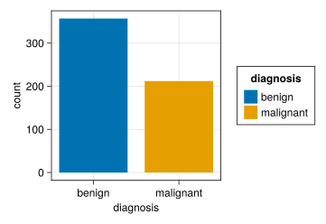
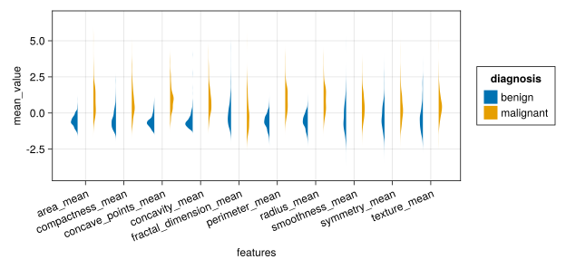
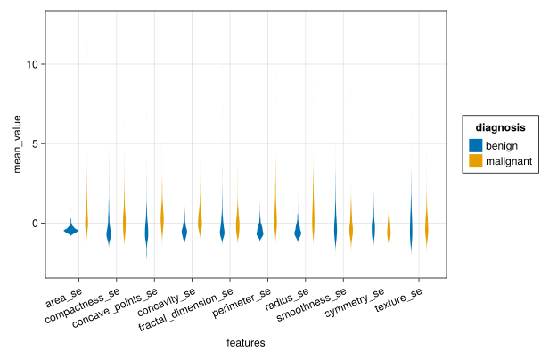
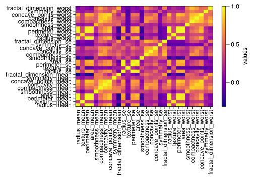

using CSV,DataFrames,Tidier,Pipe
using CairoMakie,AlgebraOfGraphics,MakieThemes
using ScientificTypes,StatsBase,RCall
#Makie.set_theme!(ggthemr(:flat))Breast Cancer Wisconsin (Diagnostic) Data Set
1. load package
2. load csv
df=CSV.File("../data/Breast-Cancer-Wisconsin.csv")|>DataFrame
df=@chain df begin
@clean_names
@select(Not(33))
@mutate(diagnosis = case_when(diagnosis=="M" => "malignant",
true => "benign"))
end
first(df,5)5×32 DataFrame
| Row | id | diagnosis | radius_mean | texture_mean | perimeter_mean | area_mean | smoothness_mean | compactness_mean | concavity_mean | concave_points_mean | symmetry_mean | fractal_dimension_mean | radius_se | texture_se | perimeter_se | area_se | smoothness_se | compactness_se | concavity_se | concave_points_se | symmetry_se | fractal_dimension_se | radius_worst | texture_worst | perimeter_worst | area_worst | smoothness_worst | compactness_worst | concavity_worst | concave_points_worst | symmetry_worst | fractal_dimension_worst |
|---|---|---|---|---|---|---|---|---|---|---|---|---|---|---|---|---|---|---|---|---|---|---|---|---|---|---|---|---|---|---|---|---|
| Int64 | String | Float64 | Float64 | Float64 | Float64 | Float64 | Float64 | Float64 | Float64 | Float64 | Float64 | Float64 | Float64 | Float64 | Float64 | Float64 | Float64 | Float64 | Float64 | Float64 | Float64 | Float64 | Float64 | Float64 | Float64 | Float64 | Float64 | Float64 | Float64 | Float64 | Float64 | |
| 1 | 842302 | malignant | 17.99 | 10.38 | 122.8 | 1001.0 | 0.1184 | 0.2776 | 0.3001 | 0.1471 | 0.2419 | 0.07871 | 1.095 | 0.9053 | 8.589 | 153.4 | 0.006399 | 0.04904 | 0.05373 | 0.01587 | 0.03003 | 0.006193 | 25.38 | 17.33 | 184.6 | 2019.0 | 0.1622 | 0.6656 | 0.7119 | 0.2654 | 0.4601 | 0.1189 |
| 2 | 842517 | malignant | 20.57 | 17.77 | 132.9 | 1326.0 | 0.08474 | 0.07864 | 0.0869 | 0.07017 | 0.1812 | 0.05667 | 0.5435 | 0.7339 | 3.398 | 74.08 | 0.005225 | 0.01308 | 0.0186 | 0.0134 | 0.01389 | 0.003532 | 24.99 | 23.41 | 158.8 | 1956.0 | 0.1238 | 0.1866 | 0.2416 | 0.186 | 0.275 | 0.08902 |
| 3 | 84300903 | malignant | 19.69 | 21.25 | 130.0 | 1203.0 | 0.1096 | 0.1599 | 0.1974 | 0.1279 | 0.2069 | 0.05999 | 0.7456 | 0.7869 | 4.585 | 94.03 | 0.00615 | 0.04006 | 0.03832 | 0.02058 | 0.0225 | 0.004571 | 23.57 | 25.53 | 152.5 | 1709.0 | 0.1444 | 0.4245 | 0.4504 | 0.243 | 0.3613 | 0.08758 |
| 4 | 84348301 | malignant | 11.42 | 20.38 | 77.58 | 386.1 | 0.1425 | 0.2839 | 0.2414 | 0.1052 | 0.2597 | 0.09744 | 0.4956 | 1.156 | 3.445 | 27.23 | 0.00911 | 0.07458 | 0.05661 | 0.01867 | 0.05963 | 0.009208 | 14.91 | 26.5 | 98.87 | 567.7 | 0.2098 | 0.8663 | 0.6869 | 0.2575 | 0.6638 | 0.173 |
| 5 | 84358402 | malignant | 20.29 | 14.34 | 135.1 | 1297.0 | 0.1003 | 0.1328 | 0.198 | 0.1043 | 0.1809 | 0.05883 | 0.7572 | 0.7813 | 5.438 | 94.44 | 0.01149 | 0.02461 | 0.05688 | 0.01885 | 0.01756 | 0.005115 | 22.54 | 16.67 | 152.2 | 1575.0 | 0.1374 | 0.205 | 0.4 | 0.1625 | 0.2364 | 0.07678 |
3. decscrbe of dataset
describe(df)32×7 DataFrame
7 rows omitted
| Row | variable | mean | min | median | max | nmissing | eltype |
|---|---|---|---|---|---|---|---|
| Symbol | Union… | Any | Union… | Any | Int64 | DataType | |
| 1 | id | 3.03718e7 | 8670 | 906024.0 | 911320502 | 0 | Int64 |
| 2 | diagnosis | benign | malignant | 0 | String | ||
| 3 | radius_mean | 14.1273 | 6.981 | 13.37 | 28.11 | 0 | Float64 |
| 4 | texture_mean | 19.2896 | 9.71 | 18.84 | 39.28 | 0 | Float64 |
| 5 | perimeter_mean | 91.969 | 43.79 | 86.24 | 188.5 | 0 | Float64 |
| 6 | area_mean | 654.889 | 143.5 | 551.1 | 2501.0 | 0 | Float64 |
| 7 | smoothness_mean | 0.0963603 | 0.05263 | 0.09587 | 0.1634 | 0 | Float64 |
| 8 | compactness_mean | 0.104341 | 0.01938 | 0.09263 | 0.3454 | 0 | Float64 |
| 9 | concavity_mean | 0.0887993 | 0.0 | 0.06154 | 0.4268 | 0 | Float64 |
| 10 | concave_points_mean | 0.0489191 | 0.0 | 0.0335 | 0.2012 | 0 | Float64 |
| 11 | symmetry_mean | 0.181162 | 0.106 | 0.1792 | 0.304 | 0 | Float64 |
| 12 | fractal_dimension_mean | 0.0627976 | 0.04996 | 0.06154 | 0.09744 | 0 | Float64 |
| 13 | radius_se | 0.405172 | 0.1115 | 0.3242 | 2.873 | 0 | Float64 |
| ⋮ | ⋮ | ⋮ | ⋮ | ⋮ | ⋮ | ⋮ | ⋮ |
| 21 | symmetry_se | 0.0205423 | 0.007882 | 0.01873 | 0.07895 | 0 | Float64 |
| 22 | fractal_dimension_se | 0.0037949 | 0.0008948 | 0.003187 | 0.02984 | 0 | Float64 |
| 23 | radius_worst | 16.2692 | 7.93 | 14.97 | 36.04 | 0 | Float64 |
| 24 | texture_worst | 25.6772 | 12.02 | 25.41 | 49.54 | 0 | Float64 |
| 25 | perimeter_worst | 107.261 | 50.41 | 97.66 | 251.2 | 0 | Float64 |
| 26 | area_worst | 880.583 | 185.2 | 686.5 | 4254.0 | 0 | Float64 |
| 27 | smoothness_worst | 0.132369 | 0.07117 | 0.1313 | 0.2226 | 0 | Float64 |
| 28 | compactness_worst | 0.254265 | 0.02729 | 0.2119 | 1.058 | 0 | Float64 |
| 29 | concavity_worst | 0.272188 | 0.0 | 0.2267 | 1.252 | 0 | Float64 |
| 30 | concave_points_worst | 0.114606 | 0.0 | 0.09993 | 0.291 | 0 | Float64 |
| 31 | symmetry_worst | 0.290076 | 0.1565 | 0.2822 | 0.6638 | 0 | Float64 |
| 32 | fractal_dimension_worst | 0.0839458 | 0.05504 | 0.08004 | 0.2075 | 0 | Float64 |
4. EDA
4.1 diagnostic of cancer
let
ax=(width=250,height=250)
plt=data(df)*mapping(:diagnosis)*frequency()*mapping(color=:diagnosis)
draw(plt;axis=ax)
end
4.2 diagonstic mean
#df42= @pivot_longer(df, 3:12, names_to = "features", values_to = "mean_value");
df421=@chain df begin
@select(1:2)
end
df422=@chain df begin
@select(3:12)
mapcols(zscore, _)
end
df42=hcat(df421,df422)
df42= @pivot_longer(df42, 3:12, names_to = "features", values_to = "mean_value")5690×4 DataFrame
5665 rows omitted
| Row | id | diagnosis | features | mean_value |
|---|---|---|---|---|
| Int64 | String | String | Float64 | |
| 1 | 842302 | malignant | radius_mean | 1.0961 |
| 2 | 842517 | malignant | radius_mean | 1.82821 |
| 3 | 84300903 | malignant | radius_mean | 1.5785 |
| 4 | 84348301 | malignant | radius_mean | -0.768233 |
| 5 | 84358402 | malignant | radius_mean | 1.74876 |
| 6 | 843786 | malignant | radius_mean | -0.475956 |
| 7 | 844359 | malignant | radius_mean | 1.16988 |
| 8 | 84458202 | malignant | radius_mean | -0.118413 |
| 9 | 844981 | malignant | radius_mean | -0.319885 |
| 10 | 84501001 | malignant | radius_mean | -0.473118 |
| 11 | 845636 | malignant | radius_mean | 0.537083 |
| 12 | 84610002 | malignant | radius_mean | 0.46898 |
| 13 | 846226 | malignant | radius_mean | 1.43094 |
| ⋮ | ⋮ | ⋮ | ⋮ | ⋮ |
| 5679 | 925236 | benign | fractal_dimension_mean | -0.312677 |
| 5680 | 925277 | benign | fractal_dimension_mean | -0.188037 |
| 5681 | 925291 | benign | fractal_dimension_mean | 0.411082 |
| 5682 | 925292 | benign | fractal_dimension_mean | -0.154044 |
| 5683 | 925311 | benign | fractal_dimension_mean | -1.10159 |
| 5684 | 925622 | malignant | fractal_dimension_mean | 1.2354 |
| 5685 | 926125 | malignant | fractal_dimension_mean | 0.848737 |
| 5686 | 926424 | malignant | fractal_dimension_mean | -0.930209 |
| 5687 | 926682 | malignant | fractal_dimension_mean | -1.05768 |
| 5688 | 926954 | malignant | fractal_dimension_mean | -0.8948 |
| 5689 | 927241 | malignant | fractal_dimension_mean | 1.04278 |
| 5690 | 92751 | benign | fractal_dimension_mean | -0.560539 |
let
ax=(width=600,height=250,xticklabelrotation = pi/8)
datalayer=data(df42)
mappinglayer=mapping(:features,:mean_value)
vislayer=visual(Violin)
plt=datalayer*mappinglayer*vislayer
plt=data(df42) * visual(Violin) *mapping(:features, :mean_value,color=:diagnosis,dodge=:diagnosis,side=:diagnosis)
draw(plt;axis=ax)
end
4.3 second 10 features
df431=@chain df begin
@select(1:2)
end
df432=@chain df begin
@select(13:22)
mapcols(zscore, _)
end
df43=hcat(df431,df432)
df43= @pivot_longer(df43, 3:12, names_to = "features", values_to = "mean_value")5690×4 DataFrame
5665 rows omitted
| Row | id | diagnosis | features | mean_value |
|---|---|---|---|---|
| Int64 | String | String | Float64 | |
| 1 | 842302 | malignant | radius_se | 2.48755 |
| 2 | 842517 | malignant | radius_se | 0.498816 |
| 3 | 84300903 | malignant | radius_se | 1.2276 |
| 4 | 84348301 | malignant | radius_se | 0.326087 |
| 5 | 84358402 | malignant | radius_se | 1.26943 |
| 6 | 843786 | malignant | radius_se | -0.254846 |
| 7 | 844359 | malignant | radius_se | 0.149751 |
| 8 | 84458202 | malignant | radius_se | 0.643057 |
| 9 | 844981 | malignant | radius_se | -0.356536 |
| 10 | 84501001 | malignant | radius_se | -0.387909 |
| 11 | 845636 | malignant | radius_se | -0.0925744 |
| 12 | 84610002 | malignant | radius_se | 0.362868 |
| 13 | 846226 | malignant | radius_se | 1.9845 |
| ⋮ | ⋮ | ⋮ | ⋮ | ⋮ |
| 5679 | 925236 | benign | fractal_dimension_se | -0.177963 |
| 5680 | 925277 | benign | fractal_dimension_se | 0.230945 |
| 5681 | 925291 | benign | fractal_dimension_se | 0.356414 |
| 5682 | 925292 | benign | fractal_dimension_se | 0.570316 |
| 5683 | 925311 | benign | fractal_dimension_se | -0.764116 |
| 5684 | 925622 | malignant | fractal_dimension_se | 0.887012 |
| 5685 | 926125 | malignant | fractal_dimension_se | 0.913844 |
| 5686 | 926424 | malignant | fractal_dimension_se | 0.167832 |
| 5687 | 926682 | malignant | fractal_dimension_se | -0.490124 |
| 5688 | 926954 | malignant | fractal_dimension_se | 0.0366945 |
| 5689 | 927241 | malignant | fractal_dimension_se | 0.903262 |
| 5690 | 92751 | benign | fractal_dimension_se | -0.382418 |
let
ax=(width=600,height=400,xticklabelrotation = pi/8)
plt=data(df43) * visual(Violin) *mapping(:features, :mean_value,color=:diagnosis,dodge=:diagnosis)
draw(plt;axis=ax)
end
4.4 bee-swarm plot
df44=dropmissing(df43)
rdata=df43.mean_value
cats=df43.features
diagnosis=df.diagnosis
@rput rdata
@rput cats
@rput diagnosis
R"""
library(beeswarm)
beeswarm(rdata ~ cats,
pch = 19, pwcol = as.numeric(diagnosis))
legend("topright", legend = c("malignant", "benign"),
col = 1:2, pch = 19)
"""4.5 variables corelation
df45=select(df,3:32)
cats=names(df45)
cor_matrix=Matrix(df45)|>cor30×30 Matrix{Float64}:
1.0 0.323782 … 0.744214 0.163953 0.00706589
0.323782 1.0 0.295316 0.105008 0.119205
0.997855 0.329533 0.771241 0.189115 0.0510185
0.987357 0.321086 0.722017 0.14357 0.0037376
0.170581 -0.0233885 0.503053 0.394309 0.499316
0.506124 0.236702 … 0.815573 0.510223 0.687382
0.676764 0.302418 0.861323 0.409464 0.51493
0.822529 0.293464 0.910155 0.375744 0.368661
0.147741 0.071401 0.430297 0.699826 0.438413
-0.311631 -0.0764372 0.175325 0.334019 0.767297
0.67909 0.275869 … 0.531062 0.0945428 0.0495594
-0.0973174 0.386358 -0.119638 -0.128215 -0.0456546
0.674172 0.281673 0.554897 0.10993 0.0854326
⋮ ⋱
-0.104321 0.00912717 -0.0304134 0.389402 0.0780795
-0.0426413 0.0544575 0.215204 0.111094 0.591328
0.969539 0.352573 … 0.787424 0.243529 0.093492
0.297008 0.912045 0.359755 0.233027 0.219122
0.965137 0.35804 0.816322 0.269493 0.138957
0.941082 0.343546 0.747419 0.209146 0.079647
0.119616 0.0775034 0.547691 0.493838 0.617624
0.413463 0.27783 … 0.80108 0.614441 0.810455
0.526911 0.301025 0.855434 0.53252 0.686511
0.744214 0.295316 1.0 0.502528 0.511114
0.163953 0.105008 0.502528 1.0 0.537848
0.00706589 0.119205 0.511114 0.537848 1.0fig = Figure(size = (1800, 2400))
ax = Axis(fig[1, 1], xticks = (1:30, cats), yticks = (1:30, cats),xticklabelrotation = pi/2,ylabelsize=8,xlabelsize=8)
hmap = heatmap!(ax, cor_matrix, colormap = :plasma)
Colorbar(fig[1, 2], hmap; label = "values", width = 10, ticksize = 10)
fig